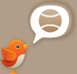
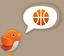
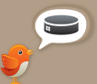

Seats Tweets is a Twitter service which tweets current ticket prices to upcoming MLB, NBA, and NHL games (with more to come!)
- Follow one of our chatty birds
- Receive tweets like those under Latest Tweets
- Visit the provided links to comparison shop for tickets to the event
That's it for now!

Cool! Just click an icon below to start following the appropriate bird!
  We'd initially planned to have an account per-team so you could get only the results you wanted. Then twitter banned our accounts :(
Yet, hope is not lost: You can get per-team results and much more via e-mail from inboxtix!